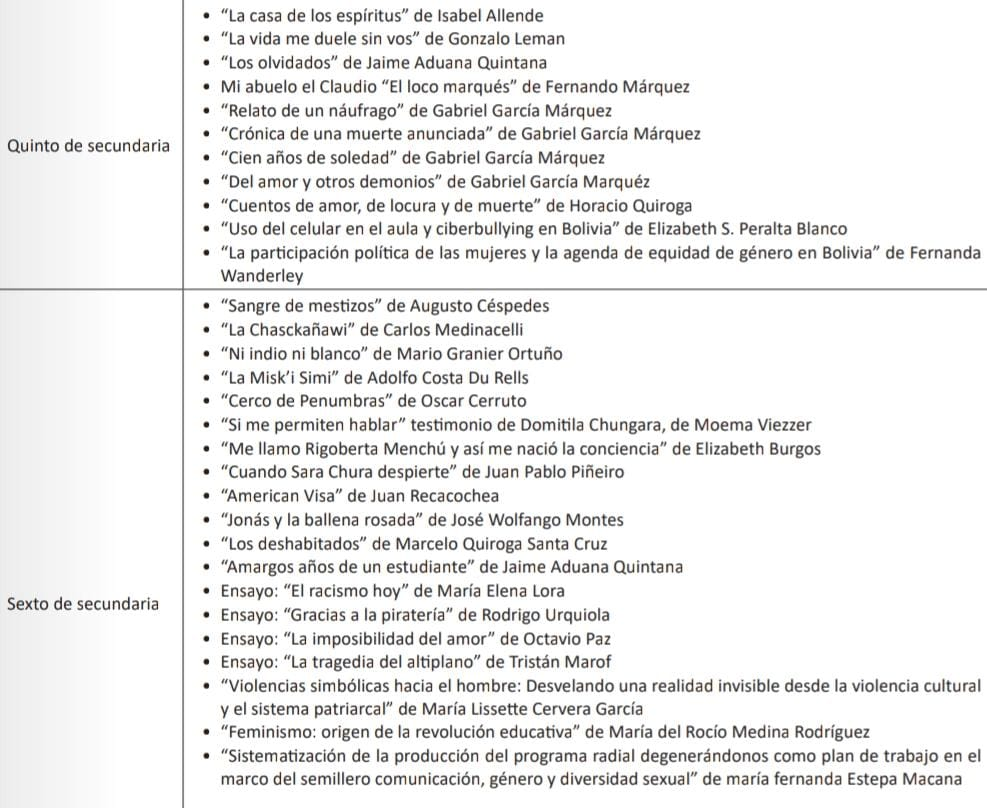
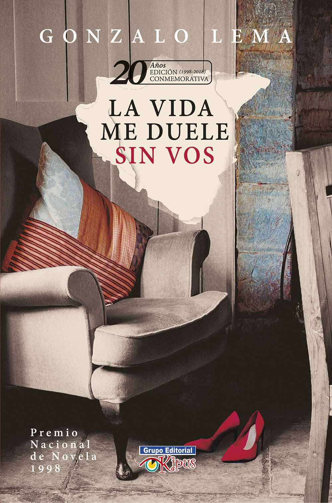

Lecturas para 5to de Secundaria

La Casa de los Espíritus
Una obra de Isabel Allende que explora la historia y la magia a través de varias generaciones.
Leer


La Vida me Duele sin Vos
Es una novela de Gonzalo Lema que cuenta una historia romántica ambientada en la cuidad de Cochabamba.
LeerRelato de un Naufrago
El 28 de febrero de 1955 se conoció la noticia de que ocho miembros de la tripulación del destructor "Caldas".
LeerDel Amor y Otros Demonios
Del amor y otros demonios es una novela del escritor colombiano Gabriel García Márquez.
Leer